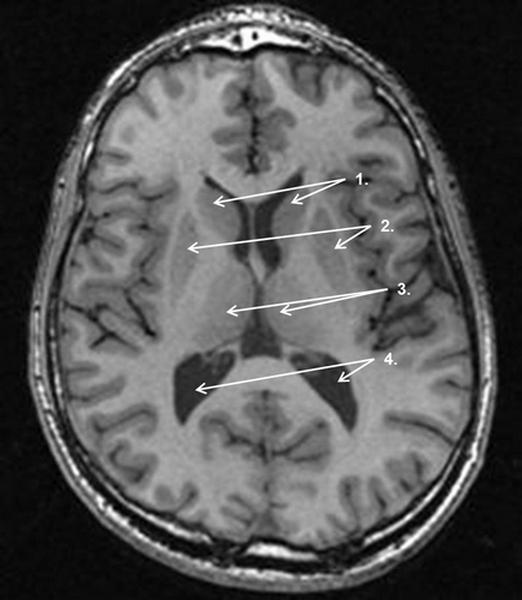

Vraag 1
Als een patiënt met een Inbewaringstelling (IBS) is opgenomen in een psychiatrisch ziekenhuis heeft dat een aantal gevolgen voor zijn rechtspositie. Welk gevolg is juist? Bij een IBS
Vraag 2
De heer T. is in verband met psychotische klachten onvrijwillig opgenomen met een juridische maatregel in een psychiatrisch ziekenhuis. Wanneer mag hij met ontslag? Kies de drie juiste antwoordopties.
Meerdere antwoorden mogelijk.
Vraag 3
Wat is op basis van prevalentiecijfers haar diagnose, in volgorde van meest waarschijnlijk naar minst waarschijnlijk? Geef per positie de bijbehorende diagnose aan.
Sleep een optie naar de bijbehorende rij, of tik eerst op een kaart en dan op een rij.
Positie 1 – meest waarschijnlijk
Sleep hier naartoe
Positie 2
Sleep hier naartoe
Positie 3
Sleep hier naartoe
Positie 4 – minst waarschijnlijk
Sleep hier naartoe
Vraag 4
Als co-assistent loopt u mee met de huisarts. U maakt kennis met Peter, 32 jaar. Peter werkt als vrijwilliger bij de brandweer. Zes weken geleden was hij betrokken bij een reddingsactie die maar net goed afliep. Hij raakte beklemd tussen twee balken en kon dankzij een collega tijdig wegkomen, voordat het gebouw grotendeels instortte. Sindsdien heeft hij last van nachtmerries. Hij droomt dat hij vast zit en levend verbrandt. Hij wordt schreeuwend wakker. Overdag is hij prikkelbaar en kan zich niet concentreren. Hij checkt overal waar vluchtroutes zijn en gedraagt zich schichtig.
Peter voegt er nog aan toe “Ik heb het gevoel dat dit elk moment weer kan gebeuren”. Waar hoort dit in een G-schema? “Ik heb het gevoel dat dit elk moment weer kan gebeuren” is een
Vraag 5
Als co-assistent loopt u mee met de huisarts. U maakt kennis met Peter, 32 jaar. Peter werkt als vrijwilliger bij de brandweer. Zes weken geleden was hij betrokken bij een reddingsactie die maar net goed afliep. Hij raakte beklemd tussen twee balken en kon dankzij een collega tijdig wegkomen, voordat het gebouw grotendeels instortte. Sindsdien heeft hij last van nachtmerries. Hij droomt dat hij vast zit en levend verbrandt. Hij wordt schreeuwend wakker. Overdag is hij prikkelbaar en kan zich niet concentreren. Hij checkt overal waar vluchtroutes zijn en gedraagt zich schichtig.
Wat is de eerste behandeloptie voor Peters klachten?
Vraag 6
60% van de psychiatrische patiënten heeft een of meer persoonlijkheidsstoornis(sen) naast een andere psychiatrische stoornis. Het hebben van een persoonlijkheidsstoornis leidt ertoe dat de behandeling van de psychiatrische stoornis
Vraag 7
Op de polikliniek psychiatrie ziet u als co-assistent een vrouw van 47 jaar in opzichtige kledij en prachtige make-up die u charmant en sociaalvaardig tegemoet treedt, alsof u bevriend met haar bent. Welke drie stoornissen staan in de differentiaaldiagnose?
Meerdere antwoorden mogelijk.
Vraag 8
Schizofrenie kent genetische overlap met andere psychiatrische stoornissen. Deze overlap is het grootst tussen schizofrenie en
Vraag 9
Kinderen met een verhoogd genetisch risico op antisociaal gedrag blijken door hun adoptieouders vaker blootgesteld te worden aan negatief opvoedgedrag. Van welk mechanisme is dit een voorbeeld?
Vraag 10
De heer V. wordt vanwege ernstige psychotische verschijnselen reeds enkele maanden behandeld met een antipsychoticum. Hij heeft steeds minder zin gekregen in seks en raakt minder opgewonden. De behandelend arts vertelt hem dat deze seksuele symptomen o.a. optreden door een verhoging van de prolactinespiegel. Deze verhoging wordt veroorzaakt door
Vraag 11
De heer W., 68 jaar, wordt vanwege de ziekte van Parkinson behandeld met levodopa en carbidopa. Sinds enkele weken reageert hij met ongecontroleerde bewegingen, is onrustig, slaapt slecht en klaagt over beestjes die ’s nachts onder zijn huid kruipen. De neuroloog concludeert psychotische symptomen als gevolg van de behandeling en schrijft olanzapine in lage dosering voor. Twee dagen later belt de echtgenote: haar man heeft de pillen trouw ingenomen, maar heeft nog steeds “last van beestjes”. Welk besluit zal de neuroloog nemen? De neuroloog zal
Vraag 12
Mevrouw L. heeft al geruime tijd veel last van somberheid en gebrek aan motivatie. Haar psychiater schrijft haar mianserine voor. Na twee maanden treedt een opvallende verbetering op van haar stemming en motivatie. Welk neurobiologisch proces in de hersenen is de oorzaak van het langzaam optreden van het therapeutisch effect?
Vraag 13
Recent onderzoek laat zien dat een eenmalige toediening van ketamine leidt tot een snelle verlichting van depressieve symptomen. Dit effect van ketamine berust naar alle waarschijnlijkheid op
Vraag 14
Nieuw onderzoek naar de behandeling van PTSS maakt gebruik van het feit dat angstgeheugen, nadat het is opgeroepen, gemanipuleerd en zelfs gewist kan worden. Welke twee typen receptoren in de hersenen zijn hierbij betrokken?
Vraag 15
Het gebruik van buspirone als anxiolyticum heeft een aantal voordelen boven het gebruik van benzodiazepines. Buspirone
Vraag 16
Bij gezonde vrijwilligers wordt het effect van methylfenidaat getest met een PET-hersenscan, met een radioligand dat bindt aan specifieke receptoren in het striatum. Een zeer plezierig effect van methylfenidaat duidt in het striatum op een
Vraag 17
Om terugval in tabaksverslaving te verminderen kan gebruik gemaakt worden van het middel varenicline. Het werkingsmechanisme van varenicline komt het meest overeen met dat van
Vraag 18
Een 75-jarige vrouw, bekend met schizofrenie, wordt opgenomen vanwege een exacerbatie COPD met koorts en verhoogde infectieparameters. Zij is onrustig en motorisch hyperactief, trekt infusen en lijnen uit en is niet te corrigeren. Zij lijkt in eerste instantie helder, maar heeft moeite haar aandacht vast te houden. Er zijn aanwijzingen voor visuele hallucinaties en achterdocht. Welk symptoom levert de belangrijkste aanwijzing dat er, naast schizofrenie, ook sprake is van een delier?
Vraag 19
De heer J. heeft een obsessief-compulsieve stoornis waardoor hij zeer langdurig zijn gasfornuis moet controleren. Hij doet mee aan onderzoek waarin men het effect van cognitieve gedragstherapie wil vergroten door D-cycloserine, een enhancer van deze behandeling, toe te voegen. Aan welke behandeling voegt men D-cycloserine toe?
Vraag 20
Het hersenvreessysteem is bij mensen met een angststoornis overactief en veroorzaakt vermijdingsgedrag. Welk deel van het hersenvreessysteem is specifiek geassocieerd met vermijdingsgedrag?
Vraag 21
In de differentiatie van angststoornissen kan het helpen om naar de focus van de angstklachten te vragen. Welke vraag past bij de gegeneraliseerde angststoornis? Bent u bang
Vraag 22
Een huisarts ziet op een dag drie mensen bij wie ze een vermoeden heeft van bipolaire stoornis: de heer X. (21 jaar), mevrouw Y. (35 jaar) en mevrouw Z. (49 jaar). Op basis van hun leeftijd schat ze de kans op de juistheid van deze diagnose het hoogst in bij
Vraag 23
Mevrouw N. is bekend met een bipolaire stoornis. Volgens haar vriend is ze toenemend achterdochtig. In welke episode kan deze klacht optreden? Bij de bipolaire stoornis kan dit optreden tijdens
Vraag 24
Waar ontspringen dopaminerge vezels in de cortex uit cellichamen?
Vraag 25
Bij de ziekte van Parkinson loopt de voortgang van het neuropathologische proces in de hersenstam van inferior naar superior. Bij patiënten resulteert dit in een verstoorde functie van achtereenvolgens eerst
Vraag 26
Bij een depressieve stoornis spelen verstoringen van verschillende hersensystemen een rol. Met welk symptoom wordt het dopaminerge systeem vooral in verband gebracht?
Vraag 27
Depressieve stoornissen kennen een hoge lifetime prevalentie. Wanneer is de kans op een eerste episode van depressie het hoogst?
Vraag 28
De heer T., 58 jaar, is opgenomen in verband met een psychotische depressie. Hij verblijft zwijgend op de afdeling. Wanneer de zaalarts hem bezoekt, ligt hij in bed en reageert niet op het verzoek rechtop te gaan zitten. Af en toe vertrekt zijn gezicht symmetrisch. Welk van onderstaande kenmerken past niet bij het beschreven toestandsbeeld?
Vraag 29
Op verwijzing van de huisarts komt Yasmina, 20 jaar en geboren in Teheran, met haar moeder op de polikliniek psychiatrie. Ze trekt zich al meer dan een half jaar terug op haar kamer en ziet haar vrienden niet meer; sinds vier maanden mompelt en lacht ze in zichzelf. Yasmina is in de zomer geboren, heeft haar vader niet gekend (overleden voor haar geboorte, leed aan schizofrenie). Welke drie factoren in deze casus pleiten voor een verhoogd risico om psychotisch te worden?
Meerdere antwoorden mogelijk.
Vraag 30

Welke tot de basale ganglia behorende structuren zijn zichtbaar in onderstaande MRI-coupe van de hersenen? Selecteer per structuur het juiste nummer, of “is niet zichtbaar” indien deze structuur niet getoond wordt.
Sleep een optie naar de bijbehorende rij, of tik eerst op een kaart en dan op een rij.
globus pallidus
Sleep hier naartoe
nucleus caudatus
Sleep hier naartoe
putamen
Sleep hier naartoe
Vraag 31
Tijdens een consult vertelt patiënt R. over haar knieklachten: ‘Door die knieklachten kan ik niet zo vaak meer op werkbezoek bij mijn cliënten.’ De huisarts reageert met: ‘Dat zal je wel vervelend vinden!’ In welke communicatieve valkuil trapt de arts hier?
Vraag 32
Welke gesprekstechniek leent zich het best voor het openmaken van emoties?
Vraag 33
In de huisartsenpraktijk stel je bij de heer D. van 59 jaar een depressie vast. Je twijfelt tussen een SSRI en een TCA. Welk praktisch en klinisch voordeel geldt voor TCA’s vergeleken met SSRI’s? TCA’s
Vraag 34
Hoe vaak komen subjectieve problemen met het autobiografisch geheugen voor na ECT?
Vraag 35
Mevrouw B. komt met buikpijnklachten waarvoor geen afwijkingen worden gevonden. Zij vertelt dat veel mensen met haar meeleven: buren vragen geregeld hoe het gaat en doen dagelijks boodschappen. Eerder leek zij eenzaam. Welke diagnose staat bovenaan in de differentiaal diagnose?
Vraag 36
Een 75-jarige vrouw komt bij de huisarts in verband met toenemende vergeetachtigheid. Zij kan niet meer goed voor zichzelf zorgen en raakt de weg kwijt. Met name ’s nachts is zij erg emotioneel. Lichamelijk onderzoek laat een urineweginfectie zien. Welke diagnose is het meest waarschijnlijk?
Vraag 37
Mevrouw R., 69 jaar, bezoekt de geheugenpoli. Volgens haar dochter draagt zij dagen achtereen dezelfde kleding, wast ze haar haar niet meer, toont weinig interesse in haar omgeving en komt tot weinig. Op een dwangmatige manier steekt ze voortdurend een haarknip rechts in haar haar. Het beeld ontstond geleidelijk na het overlijden van haar echtgenoot. Haar geheugen lijkt nog prima en ze ontkent somber te zijn. Wat is de meest waarschijnlijke diagnose?
Vraag 38
Welke van de volgende uitspraken over ADHD is juist? ADHD komt
Vraag 39
Op de polikliniek kinderpsychiatrie ziet u een moeder met haar 13-jarige dochter Layla in verband met aandachtsproblemen en moeite met plannen. U checkt de ADHD-criteria. Welke drie kenmerken zijn indicatief voor ADHD? Layla
Meerdere antwoorden mogelijk.
Vraag 40
Maaike van 6 jaar is ter observatie opgenomen op de kinderkliniek psychiatrie. Tijdens een spelobservatie speelt zij met de barbies; het valt op dat ze alleen interesse heeft voor de haren, die ze voortdurend langs haar wang strijkt. Als je een barbie pakt en haar tracht te verleiden tot samen spelen, komt er geen enkele reactie. Welke twee hoofdkenmerken van autisme zitten in deze casus?
Meerdere antwoorden mogelijk.
Vraag 41
Ferdinand is een 14-jarige jongen die op school dreigt uit te vallen. Uit informatie van de mentor blijkt dat Ferdinand vaak driftig is, vaak ruzie maakt met volwassenen, heel vermoeid is, somber, en al vanaf zijn 12e vaak spijbelt. Anderen krijgen vaak de schuld van zijn wangedrag. Welke drie kenmerken uit deze casus passen bij een oppositioneel opstandige gedragsstoornis?
Meerdere antwoorden mogelijk.
Vraag 42
Keyvan is een 14-jarige jongen die zich sinds twee maanden anders gedraagt: hij wordt sneller boos, verveelt zich, is opeens bang voor de hond van de buren, drukt soms peuken uit op zijn hand, kijkt bijna niet meer naar zijn favoriete vloggers en komt ’s nachts steeds uit bed omdat hij niet kan slapen. Hij zegt dat niemand hem aardig vindt en dat hij niks kan; soms zou hij liever dood zijn. Welke vier kenmerken uit deze casus passen bij een depressieve stoornis?
Meerdere antwoorden mogelijk.
Vraag 43
Keyvan is met een korte CGT-behandeling opgeknapt van zijn depressie en zit inmiddels in 4 HAVO. Sinds een paar weken gaat het bergafwaarts: hij is nauwelijks op school geweest, slaapt slecht maar is vol energie, eet nog maar af en toe, en zegt dat hij niet meer naar school hoeft omdat hij veel geld gaat verdienen met een nieuw YouTube-kanaal. Welke diagnose staat nu bovenaan de differentiaal diagnose?
Vraag 44
Mevrouw P., 35 jaar, voldoet aan de diagnose depressieve stoornis met klachten van overmatige vermoeidheid, veel slapen, gewichtstoename en een gevoeligheid voor afwijzing in contacten met anderen. Door dit klachtenpatroon voldoet zij aan een subtype van depressie. Welke behandeling is hierbij geïndiceerd?
Vraag 45
Mevrouw K., 40 jaar, kan al een paar nachten de slaap niet vatten en is angstig vanwege recente nare gebeurtenissen. De huisarts besluit een kortwerkende benzodiazepine voor te schrijven om de angst te onderdrukken en het inslapen te vergemakkelijken. Welk van de volgende middelen ligt dan het meest voor de hand?
Vraag 46
De heer H., 46 jaar, is opgenomen met een IBS in de kliniek, vanwege ernstige overlast bij verdenking op een psychische stoornis. Hij heeft nachtenlang over straat gezworven en uiteindelijk met een stoeptegel een ruit ingegooid bij zijn benedenbuurvrouw van 82 jaar. Hij denkt dat haar woning al meer dan een jaar verhuurd wordt aan een internationale drugsbende, waar zijn ex-vriendin aan het hoofd staat, en dat zij dit doen om hem te pesten. Zijn huur en gas/licht heeft hij niet meer betaald. Tijdens opname bespreekt u dat zijn buurvrouw erg is geschrokken; de heer H. kan deze informatie niet bevatten en raakt geagiteerd.
Wat is er op basis van deze informatie aan de hand? De verhuur van de woning van de benedenbuurvrouw aan een internationale drugsbende betreft een
Vraag 47
Vervolg casus heer H.
Welke psychiatrische stoornis speelt bij de heer H.?
Vraag 48
Vervolg casus heer H.
U praat verder met de heer H. Af en toe stopt hij midden in een zin, zonder deze verder af te maken. U kunt hem moeilijk volgen in zijn redeneertrant. Waar schrijft u deze bevinding op in het psychiatrisch onderzoek?
Vraag 49
Vervolg casus heer H.
Tijdens de opname komt een halfbroer van de heer H. op bezoek, die vertelt: vroeger was de heer H. een beetje een excentrieke vogel, die veel experimenteerde met drugs en allerlei magische en spirituele belevingen ervoer. Hij had weinig vrienden. Premorbide lijkt er bij de heer H. sprake te zijn van een:
Vraag 50
Eetstoornissen komen ook bij mannen voor. Welke eetstoornis kent de hoogste lifetime prevalentie bij mannen in de patiëntenpopulatie?
Vraag 51
Bij veroudering treden veranderingen op die van invloed zijn op iemands functioneren. Wat is de invloed van veroudering op de persoonlijkheid en copingstijl?
Kies de juiste alternatieven.
Bij veroudering is er sprake van van introversie, van ‘passieve’ coping, en vaker een locus of control.
Vraag 52
Mevrouw Z., 41 jaar, wordt doorverwezen naar de afdeling Psychosomatiek. De lichamelijke klachten lijken niet terug te voeren op een lichamelijk ziekteproces. Later blijkt dat ze de klachten zelf induceert. Er is geen sprake van een duidelijke externe motivatie, zoals het in aanmerking komen voor een uitkering. Bij mevrouw Z. is sprake van een: